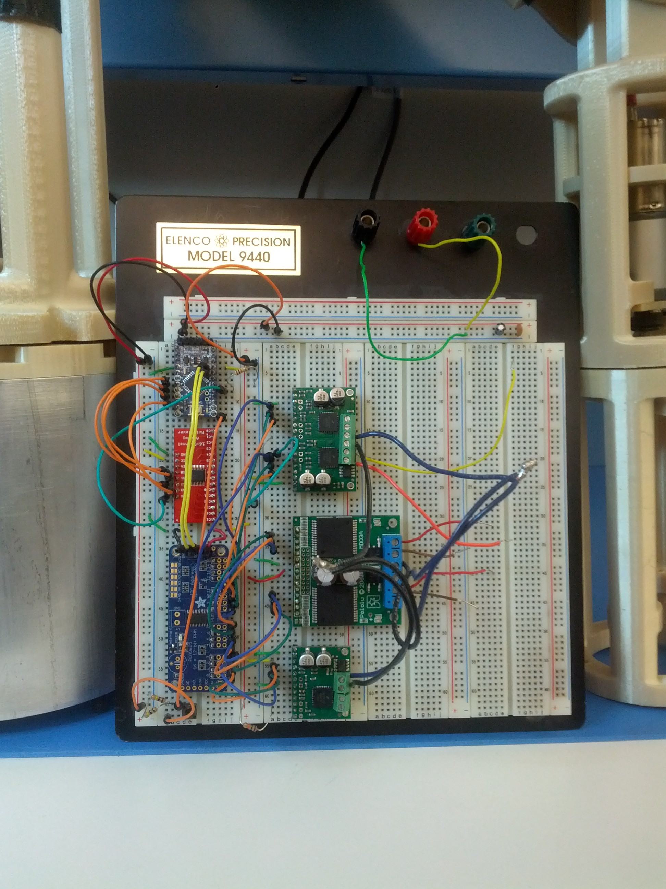
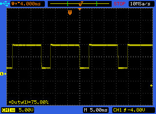
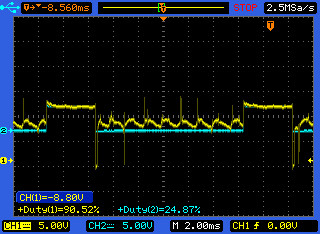
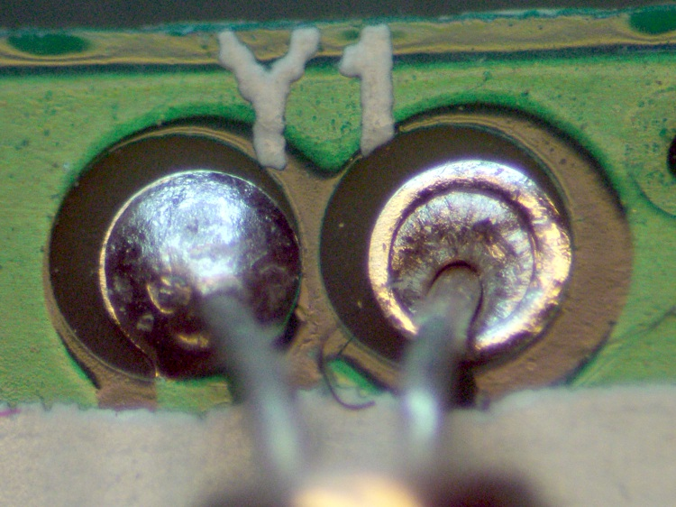
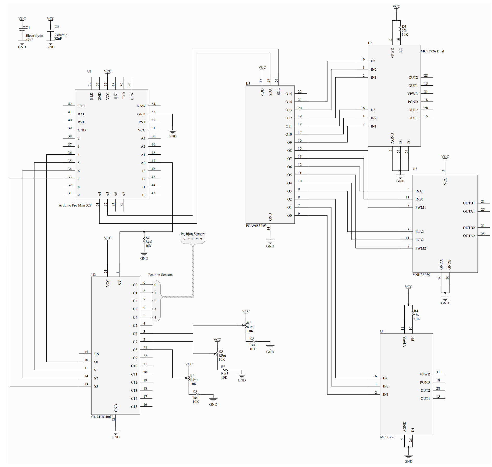
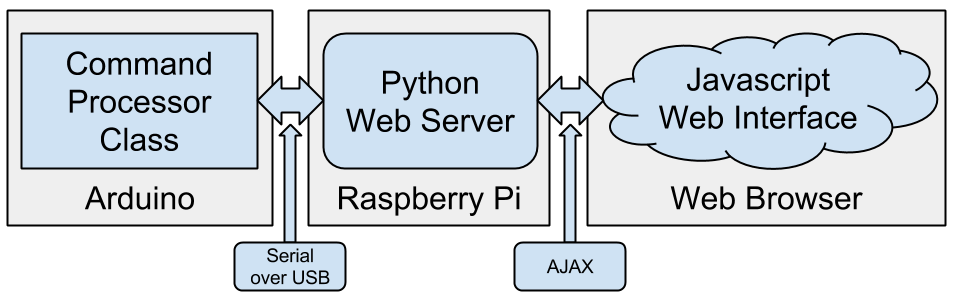

Prometheus
Fall 2013
Outline
- Mechanical
- Electronics
- Software
- Demo
- Future Work
Mechanical
Rainbowcorn

Electronics
What do the electronics consist of?
- Arduino Pro Mini
(Atmega328 micro-controller) - PWM generator
- 4<>16 Mux/Demux
- Motor Drivers
Theory of Operation
- Arduino processes software and position sensor information and gives the PWM generator commands to move.
- PWM generator translates these commands into speed and direction instructions for the motor drivers.
- The motor drivers convert 5V logical signals into 12V high current signals.
Example of Operation
- The PWM generator creates a square waveform that is fed to the PWM input of the motor drivers.
- The output of the motor drivers should look exactly the same as the PWM input, only instead of 5V amplitude, the output must be 12V amplitude.
- The waveform should be clean, with no spikes or inconsistencies.
Example of Trouble
What was wrong?
- The output of the motor driver appears to be following the 25% duty cycle of the PWM
- Oscillation during downtime, centered at about 8V indicates false triggering of the output transistors
- Notice the output waveform never reaches 0V, instead floats around 8V
What could cause this behavior?
- Cold solder joints
- Damage due to overheating
- Damage inflicted by ESD
Cold Solder Joints
Poor mechanical contact between two conductive surfaces.
ESD Caution
-
The dielectric breakdown
of air at 1mm is approximately
3kV. The human body can
accumulate an excess
of 20kV.
-
2kV is sufficient to fry
most of our board
components.
Schematic Diagram
Software
- Two Devices
- Arduino Pro Mini
- Raspberry Pi
- Communicate over Serial
Original Code
- Only one source file
- Very limited documentation
- Manual "version control"
- No remote control code
Version Control & Documentation
- Implemented version control using Git
- Specified basic documentation standard
- Available under MIT license on GitHub
Arduino Software
- Written in C++
- Directly controls the arm hardware
- Based on code from previous team
- Separated into sections to provide
layers of abstraction
Multiplexer Class
- Controls the Multiplexer
- Handles low level control
- Exposes high level API
-
Abstracts away details of how
the Multiplexer functions
Multiplexer Example
Before:
// Read input 7 on multiplexer
pinMode(4, OUTPUT);
pinMode(5, OUTPUT);
pinMode(6, OUTPUT);
pinMode(7, OUTPUT);
digitalWrite(4, 1);
digitalWrite(5, 1);
digitalWrite(6, 1);
digitalWrite(7, 0);
int value = analogRead(A0);
After:
// Read input 7 on multiplexer
Multiplexer mux = Multiplexer();
int value = mux.readInput(7);
Motor Controller Class
- Controls the PWM Board
- Handles low level control
- Exposes high level API
-
Abstracts away details of how
the PWM Board functions
Motor Controller Example
Before:
// Set motor 3 to reverse at 50% speed
Adafruit_PWMServoDriver pwm = Adafruit_PWMServoDriver();
pwm.begin();
pwm.setPWMFreq(60);
int speed = 50;
int motor = 3;
pwm.setPWM(3 * motor, 0, 4095); // INA to HIGH
pwm.setPWM(3 * motor + 1, 4095, 0); // INB to LOW
pwm.setPWM(3 * motor + 2, 0, int(speed * 40.95));
After:
// Set motor 3 to reverse at 50% speed
MotorController motor = MotorController();
motor.setup();
motor.speed(3, -50);
Robot Arm Class
- Provides an additional layer of abstraction
- Uses the Multiplexer and Motor Controller Classes
- Exposes the highest level API
// Set the elbow joint to 135 degrees
RobotArm arm = RobotArm();
arm.setup();
arm.elbow(135);
Command Processor Class
- Exposes the Robot Arm Class API over Serial
- Allows for remote control and debugging
Raspberry Pi Software
- Raspbian Linux
- Server side: Python
- Client side: Javascript
- Communicate using AJAX
Python Server
Facilitates communication between the Arduino and the Javascript web interface.
Javascript Client
- Responsive UI - Works on PC,
tablet, and phone - Sends AJAX Requests to
to Python server - 3D Rendering of the
Prometheus using WebGL - Command console for
debugging
Live Demo
Its alive!
Sort Of...
Future Work
- Consider using Beaglebone Black
- Create wiring harness
- Add limit switches
- Improve code documentation
- Fix PID control bugs
- Fix bugs when controlling 5 joints at once
- Tune PID controls and limits once the arm is assembled
- Design and build Gripper
- Consider an additional degree of freedom in the wrist.
THE END
Presented By:
Marek Litomisky
Ernest Hovhannisyan
Sung Hoon Kim
Roman Zograbian